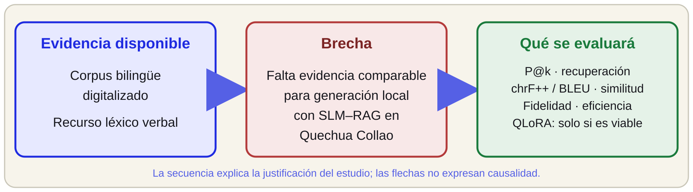
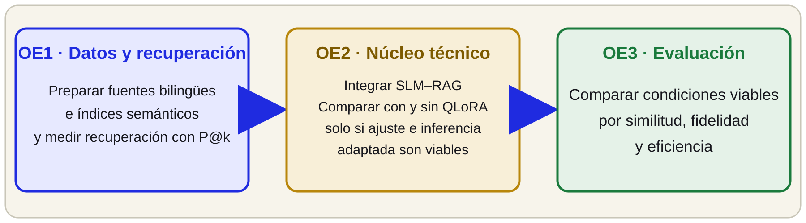
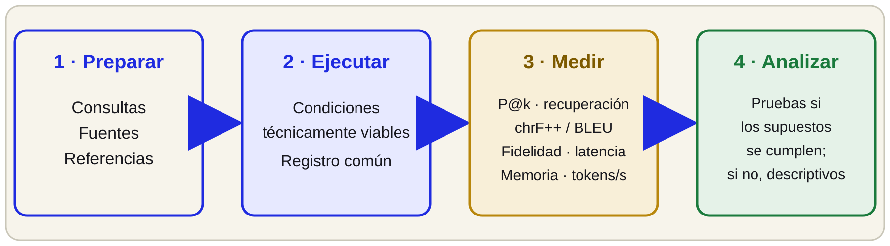

UNIVERSIDAD NACIONAL DE SAN ANTONIO ABAD DEL CUSCO
FACULTAD DE INGENIERÍA ELÉCTRICA, ELECTRÓNICA, INFORMÁTICA Y MECÁNICA
ESCUELA PROFESIONAL DE INGENIERÍA INFORMÁTICA Y DE SISTEMAS
[ SUSTENTACIÓN DE PLAN DE TESIS ]
CURSO: SEMINARIO DE INVESTIGACIÓN I
Diseño e implementación de una arquitectura SLM–RAG con QLoRA para la generación contextualizada en Quechua Collao
PRESENTADO POR
• Br. Edmil Jampier Saire Bustamante
DOCENTE
Msc. Raúl Huillca Huallparimachi
LUGAR Y AÑO
Cusco – Perú, 2026
Contenido
PRESENTACIÓN DEL PLAN — HASTA METODOLOGÍA01Problema de investigación
05Hipótesis
02Justificación
06Estado del arte
03Alcances y limitaciones
07Marco teórico
04Objetivos
08Metodología
1. Problema de investigación — Contexto y evidencia
RECURSOS EXISTENTES · CONTEXTO · BRECHA DE EVIDENCIARecursos para Quechua Collao
Orcotoma et al. (2025) describen la creación de un corpus bilingüe a partir de materiales digitalizados. Duran y Silberztein (2026) presentan un recurso léxico verbal.
Estos recursos apoyan la investigación lingüística, pero no constituyen por sí solos un generador contextualizado.
Estos recursos apoyan la investigación lingüística, pero no constituyen por sí solos un generador contextualizado.
El contexto debe evaluarse
Court y Elsner (2024) muestran que el efecto del contexto varía según el tipo de información en una tarea de traducción de quechua sureño al español.
Ese resultado no anticipa el desempeño de generación en Quechua Collao.
Ese resultado no anticipa el desempeño de generación en Quechua Collao.
Brecha por investigar
Falta evidencia experimental comparable sobre calidad de respuestas, fidelidad a fragmentos recuperados y eficiencia de SLM–RAG local para Quechua Collao.
QLoRA se evaluará si el ajuste y la inferencia con adaptador son viables.
QLoRA se evaluará si el ajuste y la inferencia con adaptador son viables.
1.2 Brecha de investigación
EVIDENCIA DISPONIBLE · QUÉ FALTA · QUÉ SE EVALUARÁ
1.3 Formulación del problema
PROBLEMA GENERAL Y TRES PROBLEMAS ESPECÍFICOSPROBLEMA GENERAL
¿Cómo se comporta una arquitectura SLM–RAG para la generación contextualizada en Quechua Collao dentro de un entorno computacional offline, y qué aporte adicional presenta QLoRA si el ajuste y la inferencia con adaptador son viables?
Problemas específicos
PE1 · Datos y recuperación. ¿Cómo estructurar e indexar semánticamente una base documental bilingüe para optimizar la recuperación local?
PE2 · Núcleo técnico y adaptación. Si el ajuste y la inferencia con adaptador son viables, ¿qué diferencia produce QLoRA en la fidelidad al contexto de SLM–RAG bajo las mismas condiciones?
PE3 · Evaluación. ¿Qué diferencias de similitud, fidelidad contextual y eficiencia se observan entre SLM base, SLM–RAG y SLM–RAG–QLoRA, cuando esta última condición sea viable?
PE2 · Núcleo técnico y adaptación. Si el ajuste y la inferencia con adaptador son viables, ¿qué diferencia produce QLoRA en la fidelidad al contexto de SLM–RAG bajo las mismas condiciones?
PE3 · Evaluación. ¿Qué diferencias de similitud, fidelidad contextual y eficiencia se observan entre SLM base, SLM–RAG y SLM–RAG–QLoRA, cuando esta última condición sea viable?
2. Justificación
PERTINENCIA TEÓRICA · PRÁCTICA · METODOLÓGICATeórica
Los antecedentes cubren recursos para quechua, uso de contexto en traducción y sistemas offline en otros dominios.
Sus tareas y entornos difieren de la generación contextualizada en Quechua Collao. Hace falta evaluar esa combinación directamente.
Sus tareas y entornos difieren de la generación contextualizada en Quechua Collao. Hace falta evaluar esa combinación directamente.
Práctica
Se estudiará una arquitectura que pueda ejecutar inferencia sin conexión y consultar documentos trazables en Quechua Collao.
La utilidad, la calidad de las respuestas y su uso educativo son aspectos por evaluar; no se presuponen resultados ni efectos en estudiantes.
La utilidad, la calidad de las respuestas y su uso educativo son aspectos por evaluar; no se presuponen resultados ni efectos en estudiantes.
Metodológica
Se compararán el modelo base, SLM–RAG y SLM–RAG–QLoRA si esta última configuración es viable.
Se medirán recuperación, similitud de respuesta, fidelidad al contexto y eficiencia. Los ODS 9 y 10 son motivacionales; no se medirán impactos sociales.
Se medirán recuperación, similitud de respuesta, fidelidad al contexto y eficiencia. Los ODS 9 y 10 son motivacionales; no se medirán impactos sociales.
3. Alcances y limitaciones
DELIMITACIÓN DEL ESTUDIOAlcances
| Dimensión | Delimitación |
|---|---|
| Lingüística | Fuentes y consultas identificadas como Quechua Collao o español; no se generalizarán resultados a otras variedades. |
| Tecnológica | SLM candidato, recuperación documental local e inferencia offline; QLoRA sujeto a viabilidad. |
| Evaluación | P@k, similitud con referencias, sustento contextual y recursos de cómputo. |
Limitaciones previstas
• GPU disponible con 4 GB de VRAM; ajuste e inferencia con adaptador requieren pruebas.
• Cobertura, licencia y calidad OCR de las fuentes por inventariar.
• Las métricas de similitud no prueban por sí solas corrección semántica ni fluidez.
• El estudio no medirá aprendizaje ni impacto social.
• Cobertura, licencia y calidad OCR de las fuentes por inventariar.
• Las métricas de similitud no prueban por sí solas corrección semántica ni fluidez.
• El estudio no medirá aprendizaje ni impacto social.
4. Objetivos de la investigación
UN OBJETIVO GENERAL · TRES OBJETIVOS ESPECÍFICOSOBJETIVO GENERAL
Diseñar e implementar una arquitectura SLM–RAG para generar respuestas contextualizadas en Quechua Collao sin conexión y evaluar el aporte de QLoRA si el ajuste y la inferencia con adaptador son viables.

5. Hipótesis de investigación
PROPUESTAS A CONTRASTAR · NO SON RESULTADOSHIPÓTESIS GENERAL
Si QLoRA resulta viable, SLM–RAG–QLoRA obtendrá mayor fidelidad al contexto y similitud con las respuestas de referencia que SLM–RAG. También se describirán sus diferencias frente al SLM base y su costo computacional.
HE1 · Recuperación
Con las consultas y etiquetas definidas, el índice semántico recuperará una mayor proporción de fragmentos pertinentes que la búsqueda léxica de referencia.
HE2 · QLoRA
Si el ajuste y la inferencia con el adaptador son viables, E3 tendrá mayor fidelidad al contexto que E2, manteniendo constantes modelo, fuentes, consultas y parámetros.
HE3 · Comparación
Si se ejecutan las tres condiciones, E3 tendrá mayor similitud con las referencias y mayor fidelidad al contexto que E1 y E2, según las métricas preestablecidas.
6. Estado del arte — Antecedentes relevantes
APORTES Y LÍMITES PARA ESTA PROPUESTA| Antecedente | Aporte y límite |
|---|---|
| Orcotoma et al. (2025) y Duran y Silberztein (2026): recursos para quechua. | Corpus bilingüe y recurso léxico; no evalúan por sí mismos generación con RAG. |
| Court y Elsner (2024): contexto en traducción de quechua sureño. | El efecto depende del tipo de contexto; la tarea no es generación en Collao. |
| Hevia et al. (2025): tutoría offline con SLM y RAG. | Identifica riesgos ante fragmentos extensos o irrelevantes; evalúa biología en inglés. |
| Xu et al. (2024): modelos en dispositivos con recursos limitados. | Revisión de técnicas; no mide el hardware de este proyecto. |
| Dettmers et al. (2023): método QLoRA. | Describe ajuste eficiente en su entorno experimental; no prueba viabilidad en la GPU disponible aquí. |
Estos antecedentes orientan el diseño y sus riesgos; sus resultados no se trasladan automáticamente a la tarea propuesta.
6.1 Decisiones de diseño sustentadas
CADA DECISIÓN SE SOMETERÁ A VERIFICACIÓN① Condición offlineDELIMITACIÓN
La inferencia local sin conexión forma parte del alcance. La tesis no concluye que todos los servicios comerciales fallen en quechua.
② SLM baseREFERENCIA
Qwen2.5-3B-Instruct es el candidato inicial. Se comprobarán licencia, compatibilidad y consumo antes de fijar la configuración.
③ RAG localA EVALUAR
El sistema recuperará documentos con procedencia y variedad identificadas. Se medirá la pertinencia; no se da por supuesta.
④ QLoRA condicionadoSUJETO A PRUEBA
Se intentará si son viables el ajuste y la inferencia con adaptador. Si no, se documentará el motivo y E3 no se reportará como evaluada.
⑤ Parámetros y métricasA FIJAR EN PILOTO
Fragmentos de 250–400 tokens y recuperación de tres fragmentos son valores iniciales para el piloto. Se compararán P@k, similitud con referencias, fidelidad y eficiencia.
6.2 Brecha de investigación provisional
LA REVISIÓN ES PRELIMINAR; LA NOVEDAD DEBE VERIFICARSE| Línea estudiada | Alcance observado en los antecedentes revisados |
|---|---|
| Recursos lingüísticos para quechua | Corpus y recursos léxicos disponibles; no evalúan esta arquitectura generativa. |
| Contexto en tareas de quechua | Estudios de traducción; el efecto del contexto no es uniforme. |
| Tutoría offline con recuperación | Antecedente en otro dominio e idioma; limita la transferencia directa. |
| Inferencia local y eficiencia | Revisiones técnicas orientan opciones, pero no miden el equipo de esta tesis. |
| Adaptación QLoRA | El trabajo original no demuestra que ajuste e inferencia adaptada quepan en la GPU local de 4 GB. |
Brecha por contrastar: la revisión preliminar no localizó evidencia comparable para SLM–RAG y QLoRA en generación contextualizada en Quechua Collao bajo operación offline. Esto no constituye todavía una afirmación definitiva de novedad.
7. Marco teórico — Conceptos de trabajo
DATOS · MODELO · RECUPERACIÓN · ADAPTACIÓN · EVALUACIÓN1. Fuentes lingüísticas
Cada documento conservará procedencia, licencia, idioma y variedad. El material obtenido con OCR se revisará antes de indexarlo.
2. Modelo compacto local
Qwen2.5-3B-Instruct es el modelo candidato. Formato, cuantización y motor se fijarán tras comprobar compatibilidad y recursos.
3. Recuperación aumentada
RAG busca fragmentos en una base documental local y los aporta al contexto. La pertinencia se comparará con una búsqueda léxica.
4. Adaptación QLoRA
Ajuste de adaptadores sobre un modelo cuantizado. Se validarán entrenamiento, exportación y carga en inferencia.
5. Evaluación: recuperación, similitud con referencias, fidelidad a la evidencia y eficiencia. La similitud no equivale por sí sola a corrección semántica o fluidez.
7.1 Síntesis — Función de cada componente
CONFIGURACIONES COMPARABLES Y MEDIDAS SEPARADAS| Componente | Condición | Papel en el estudio |
|---|---|---|
| SLM base | E1 | Referencia local sin recuperación documental ni adaptador. |
| RAG local | E2; mismos documentos en E3 | Aporta fragmentos al contexto; pertinencia y uso se medirán. |
| Adaptador QLoRA | E3, solo si es viable | Permite comparar E3 con E2 para estimar el aporte adicional de la adaptación. |
| Evaluación | Protocolo común | Mide P@k, similitud con referencias, sustento contextual y costo computacional. |
E1 vs. E2 describe el cambio al añadir recuperación. E2 vs. E3 compara la adaptación si el ajuste y la inferencia con adaptador son viables. E1 vs. E3 refleja el efecto conjunto de los componentes.
8. Metodología — Enfoque, diseño y variables
EXPERIMENTO COMPUTACIONAL CON MEDIDAS REPETIDASTIPO
Aplicada y tecnológica
ENFOQUE
Cuantitativo
DISEÑO
Comparativo computacional
Medidas repetidas por consulta
Medidas repetidas por consulta
Variable independiente — configuración del sistema
E1 · SLM base
Modelo local sin RAG ni adaptador.
Modelo local sin RAG ni adaptador.
E2 · SLM–RAG
El mismo modelo con recuperación documental local.
El mismo modelo con recuperación documental local.
E3 · SLM–RAG–QLoRA
Misma configuración con adaptador, solo si entrenamiento e inferencia son viables.
Misma configuración con adaptador, solo si entrenamiento e inferencia son viables.
| Variable dependiente | Indicadores | Instrumento / interpretación |
|---|---|---|
| Recuperación | P@k con etiquetas de pertinencia | Comparar índice semántico y búsqueda léxica al mismo k. |
| Respuesta | chrF++ y BLEU | SacreBLEU frente a referencias; similitud, no medida completa de calidad lingüística. |
| Fidelidad | Afirmaciones respaldadas por fragmentos entregados | Revisión con rúbrica; evaluador automático exploratorio hasta validarlo para la variedad. |
| Eficiencia | Latencia, tokens/s, máximos de RAM/VRAM, errores | Telemetría y registros bajo un protocolo y equipo comunes. |
Se controlarán modelo y tokenizador, documentos, consultas, índice, instrucciones, parámetros de generación, hardware y protocolo.
8.1 Procedimiento — DSR, muestra y gestión de datos
TRES FASES ALINEADAS CON LOS OBJETIVOS ESPECÍFICOSInvestigación basada en diseño (DSR): diseñar, construir y evaluar el artefacto en tres fases.
Fase 1 · Datos
Inventariar fuentes.
Preparar corpus e índices.
Revisar OCR y P@k.
Preparar corpus e índices.
Revisar OCR y P@k.
Fase 2 · Sistema
Integrar SLM–RAG offline.
Fijar versiones.
QLoRA si ajuste e inferencia adaptada son viables.
Fijar versiones.
QLoRA si ajuste e inferencia adaptada son viables.
Fase 3 · Evaluación
Ejecutar condiciones viables.
Registrar respuestas y pasajes.
Medir y revisar errores.
Registrar respuestas y pasajes.
Medir y revisar errores.
Población, unidad y muestra
Población: consultas respondibles con fuentes autorizadas en español o Quechua Collao. Unidad: respuesta por consulta y condición. Meta: 100 consultas intencionales, sujeta al inventario y al piloto.
Datos y ética
Registrar licencia, idioma y variedad; contrastar texto sintético. Consultas fuera de QLoRA; mismas fuentes en E2/E3. Sin datos personales; consentimiento si hay revisores.
8.2 Métricas — Qué mide cada indicador
SIMILITUD · RECUPERACIÓN · FIDELIDAD · EFICIENCIARecuperación
P@k con etiquetas de pertinencia. Comparar búsqueda semántica y léxica con el mismo k.
Similitud de respuesta
chrF++ y BLEU con referencias documentadas. No prueban por sí solos comprensión, corrección ni fluidez.
Fidelidad contextual
Afirmaciones respaldadas por fragmentos; revisión con rúbrica. RAGAS solo tras validar juez, idioma y variedad.
Eficiencia
Latencia, tokens/s, RAM/VRAM y errores bajo el mismo equipo y protocolo.
Una persona competente en Quechua Collao revisará las referencias; si no es posible, se reportará que las métricas comparan referencias no validadas.
8.3 Evaluación — Protocolo y análisis
PROCEDIMIENTO COMÚN PARA TODAS LAS CONDICIONES VIABLES
Muestra
Meta de 100 consultas, sujeta al inventario y al piloto. Se mantienen consultas y documentos de evidencia comunes entre condiciones.
Análisis
Friedman y Wilcoxon con ajuste Holm, si los datos y supuestos lo permiten; si no, análisis descriptivo.
Cierre de la propuesta
Qué propone: evaluar una arquitectura SLM–RAG local para generar respuestas contextualizadas en Quechua Collao.
Cómo se evaluará: comparar recuperación, similitud con referencias, fidelidad al contexto y eficiencia; QLoRA se incluye solo si el ajuste y la inferencia con adaptador son viables.
Estado: el plan llega hasta Metodología. Los resultados aún requieren inventario, piloto, revisión lingüística y ejecución experimental.
Cómo se evaluará: comparar recuperación, similitud con referencias, fidelidad al contexto y eficiencia; QLoRA se incluye solo si el ajuste y la inferencia con adaptador son viables.
Estado: el plan llega hasta Metodología. Los resultados aún requieren inventario, piloto, revisión lingüística y ejecución experimental.
Gracias · Preguntas